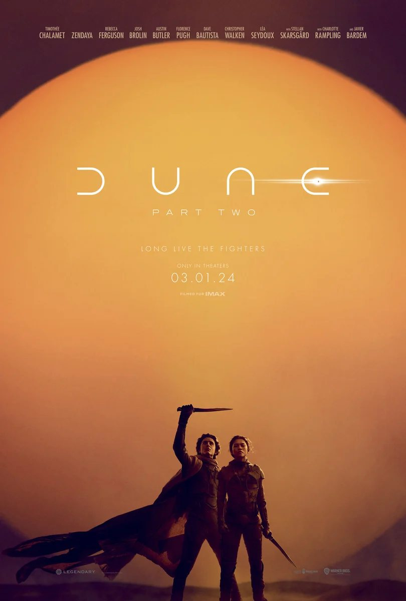

A
Carlos Abraham
★★★★★
Visualmente impresionante. La banda sonora y la fotografía están a otro nivel, una secuela que supera a la primera.

2024 · Ciencia ficción · 2h 46m
Paul Atreides se une con Chani y los Fremen en un camino de venganza contra quienes destruyeron a su familia. Deberá elegir entre el amor y el destino del universo.
Visualmente impresionante. La banda sonora y la fotografía están a otro nivel, una secuela que supera a la primera.
Muy buena, aunque se siente larga en algunos tramos. El final es espectacular.
De lo mejor de ciencia ficción en años. Recomendadísima verla en pantalla grande.